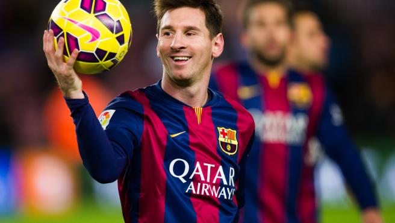

Lionel Messi
Lionel Andrés Messi Cuccittini (Rosario, 24 de junio de 1987), conocido como Leo Messi, es un futbolista argentino que juega como delantero en el Inter Miami de la Major League Soccer.
Wikipedia
Cristiano Ronaldo
Cristiano Ronaldo dos Santos Aveiro (Funchal, Madeira; 5 de febrero de 1985), conocido como Cristiano Ronaldo, es un futbolista portugués. Juega como extremo izquierdo o delantero y su equipo actual es el Al-Nassr F. C. de la Liga Profesional Saudí.
Wikipedia